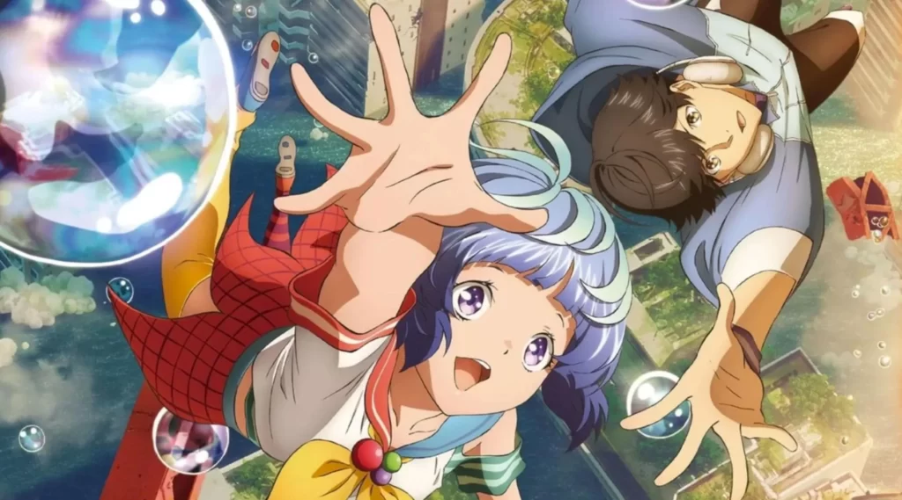
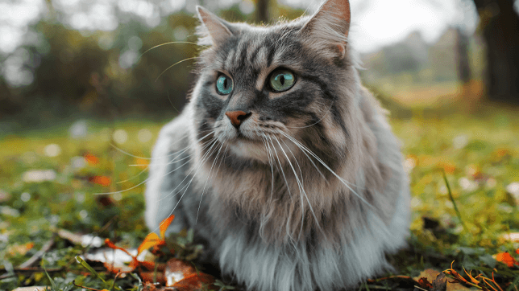

Spider-Man Across The Spider Verse
The narrative focuses on Miles' struggle to balance the duties of his civilian persona and his role as the second Spider-Man when his new home, Harlem, is threatened by a war between the Roxxon Energy Corporation and a high-tech criminal army called the Underground, led by the mysterious Tinkerer.

Bubbles
In the near future, the world is overcome by bubbles that break the laws of reality. An explosion at Tokyo Tower concentrates all the bubbles in Tokyo, but makes the city uninhabitable. Various young folk defy the restrictions, and live there anyway, using parkour tournaments as a means to barter and trade supplies. In one parkour team, the Blue Blazes, 18-year-old Hibiki is an exceptional parkour talent, but he avoids others due to a hearing ultrasensitivity. Tokyo Tower continues to be an impossible location to get to because of gravity anomalies.
A Whiskers Away
Miyo Sasaki is a 14-year-old girl living in the town of Tokoname, Aichi Prefecture. She does not get along with her stepmother, Kaoru. She always flirts with her crush, the handsome Kento Hinode, even though he has no romantic feelings for her at all, and often stays away from her. One day, she receives a magical Noh mask from a mysterious mask seller, which lets her become a cat. As "Tarō," she spends time with Hinode, keeps him company while he studies Japanese pottery, and listens to his problems. She longs to confess that the cat he loves and the girl he dislikes are the same person.

Tekken 7
Tekken 7 is the latest game in the legendary Tekken series, and it continues the epic rivalry between the Mishima family, mainly focusing on the showdown between Heihachi and Kazuya. The game introduces some cool new features like Rage Arts and Rage Drives, which make the fights even more intense and strategic. With an awesome roster of characters, amazing visuals, and smooth gameplay, Tekken 7 is a blast to play whether you're going solo or battling against friends. It’s got that perfect balance of deep storylines and action-packed combat that Tekken fans love.

Gta V
GTA V is an iconic open-world game set in the fictional city of Los Santos, offering players the chance to control three unique characters—Michael, Trevor, and Franklin. With a massive, detailed world to explore, an engaging story, and the ability to switch between characters, it delivers endless hours of action and freedom. GTA Online adds even more replayability, letting players create their own adventures. It's a game that perfectly blends storytelling, exploration, and chaotic fun.
Call Of Duty Mobile
COD Mobile brings the classic Call of Duty experience to mobile devices, offering a smooth, fast-paced shooter with a variety of modes like Battle Royale, Team Deathmatch, and more. With familiar maps, weapons, and characters from the franchise, it lets players enjoy intense multiplayer action on the go. The game also includes a ranked mode, custom loadouts, and regular updates, keeping things fresh and engaging. COD Mobile is praised for its easy-to-learn controls, high-quality graphics, and competitive gameplay, making it one of the best mobile shooters out there.

Dog
Dogs are often considered one of the most loyal and loving companions. Known for their unique personalities and strong bonds with humans, they come in a wide range of breeds, each with its own traits. Whether it's a playful puppy or a calm senior dog, they bring joy, comfort, and protection to our lives. Their ability to communicate through body language and barks, along with their unwavering loyalty, makes them a beloved pet worldwide. Dogs are also great for outdoor activities, companionship, and sometimes even working roles, like service or therapy dogs, showcasing how versatile and important they are to many people's lives.

Cat
Cats are independent, curious, and often quirky companions. Known for their playful antics and affectionate moments, they can be both aloof and loving depending on their mood. Whether they’re curling up in your lap or chasing after toys, cats have a way of keeping life interesting. They’re also low-maintenance pets, usually content with a cozy spot to sleep and a few snacks. With their sleek movements, purring, and sometimes sassy attitude, cats make for charming and mysterious companions that many people adore. Plus, their presence can bring a calm, comforting vibe to a home.
Capybara
Capybaras are large, social rodents native to South America, known for their calm demeanor and gentle nature. As the largest rodent in the world, they can weigh up to 140 pounds and live in groups near bodies of water like rivers and lakes. Capybaras are semi-aquatic, enjoying swimming and lounging in the water, often seen interacting peacefully with other animals. Their friendly and non-aggressive behavior makes them popular in zoos and petting farms, and they even get along with other species, including birds and smaller mammals. Despite their size, they have a relaxed, almost zen-like vibe that makes them endearing to animal lovers.